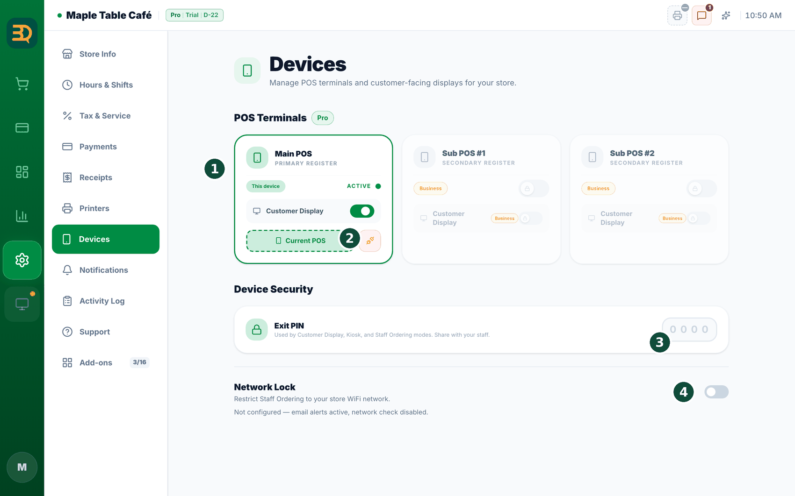

21Equipos y red
Todo lo que hay que preparar antes de instalar BrewDesk en una tienda (dispositivos, impresoras, lectores de tarjetas y la red) en un solo lugar. Reúne consejos repartidos entre los capítulos de modos de dispositivo, vinculación de dispositivos, trabajo sin conexión e impresoras, en el orden de la instalación. Para la secuencia de instalación propiamente dicha, siga la Lista de verificación de instalación.
Dispositivos
Puede usar tabletas y computadoras que ya tenga. Sin embargo, conectar dispositivos entre sí (registrar dispositivos de pedidos del personal, pantalla para clientes y quiosco de lista de espera) solo funciona en la app de BrewDesk instalada.
| Dispositivo | Cómo se usa · notas |
|---|---|
| iPad | Instale la app de BrewDesk. Puede cumplir cualquier función: caja principal, caja adicional, pedidos del personal, pantalla para clientes o quiosco de lista de espera. Imprime directamente desde la app en impresoras Wi-Fi/LAN o AirPrint (Recibos e impresoras). |
| Tableta Android | Todavía no es compatible (la app de Android está en preparación). Por ahora use un iPad o la app de escritorio. |
| Computadora (Mac · Windows) | Se recomienda la app de escritorio de BrewDesk. Las impresoras USB se conectan mediante Select installed printer de la app de escritorio, así que una caja con impresora USB necesita la app de escritorio (Recibos e impresoras). |
| Navegador web | Puede registrarse, configurar e incluso usar una caja en brewdesk.io. Pero una pantalla de navegador no se puede registrar como dispositivo nuevo ("Add devices from the BrewDesk app"), y para imprimir por Wi-Fi desde un navegador se necesita la app de escritorio de BrewDesk (brewdesk.io/downloads) abierta en esa computadora (la pantalla puede llamarla Print Bridge). Instale la app en cualquier dispositivo que se quede en la tienda. |

Impresoras de recibos y de cocina

- Tipo: cualquier impresora térmica de recibos estándar. Los valores predeterminados son para papel de 80 mm (42 caracteres por línea).
- Impresoras Wi-Fi / LAN: se conectan con la dirección IP y el puerto de la impresora (normalmente 9100). Si no conoce la IP, toque Search (Buscar). Conecte la impresora al mismo router que las cajas.
- Impresoras USB: instale el controlador de la impresora en la computadora como siempre (en Mac suele ser automático; en Windows se usa el controlador del fabricante) y luego elíjala de la lista en la app de escritorio.
- Función: asigne una función a cada impresora: Main Receipt (recibos de clientes) o Kitchen (comandas de cocina). Una impresora puede hacer ambas cosas, y se puede vender perfectamente sin impresora de cocina.
- Cajón de efectivo: el cajón se abre a través de la impresora de recibos, y su opción de cajón de efectivo debe estar activada en los ajustes de la impresora. El cajón no se abre desde una caja adicional (Sub POS) (Cajón de efectivo).
Lectores de tarjetas

- Lectores de tarjetas conectados: BrewDesk usa lectores Stripe Terminal. El dinero va directamente a la propia cuenta de Stripe del propietario. Los lectores se compran desde el panel de Stripe.
- Conexión: primero conecte la cuenta de Stripe del propietario en
Settings › Payments. Encienda el lector, conéctelo a la misma red que la caja y luego, en la sección de lectores de tarjetas de la misma pantalla, toque Discover Readers (Descubrir Lectores) → Connect (Conectar). - Una terminal aparte ya existente: las tiendas que cobran con tarjeta en una terminal no conectada a BrewDesk lo registran con los botones de marcas de tarjeta de la pantalla de pago (Record Only (Solo registro)). Asegúrese de que Card (Record Only) (Tarjeta (solo registro)) esté activado en
Settings › Payments(Cobrar).
Wi-Fi y red
Los dispositivos de BrewDesk se comunican con la caja principal a través de la propia red de la tienda, incluso cuando internet está caído. Eso convierte al router en la parte más importante de la instalación.
- Todo en el mismo Wi-Fi de la tienda (mismo router): la caja principal, las cajas adicionales, las tabletas de pedidos del personal, las pantallas para clientes, las impresoras de red y los lectores de tarjetas van todos en una misma red. Las redes Wi-Fi distintas son el motivo más común por el que los dispositivos no se encuentran.
- Nada de Wi-Fi de invitados ni de puntos de acceso del teléfono: si la tienda tiene un Wi-Fi de invitados aparte, mantenga los dispositivos de la tienda solo en el Wi-Fi de la tienda. Un dispositivo en el Wi-Fi de invitados recibe el aviso "This device is outside the store network".
- Desactive el aislamiento de AP: si el router tiene activado el "aislamiento de AP" o "aislamiento inalámbrico", los dispositivos no pueden comunicarse entre sí aunque estén en el mismo Wi-Fi. Desactívelo para el Wi-Fi de la tienda.
- Asigne una IP fija a las impresoras: si la dirección IP de una impresora Wi-Fi/LAN cambia, BrewDesk sigue imprimiendo a la anterior. Configurar una IP fija en la impresora o en el router lo evita.
- ¿Cambió el router?: es posible que los dispositivos ya no encuentren la caja principal. Vuelva a vincularlos desde la caja principal y revise de nuevo las IP de las impresoras (Agregar un dispositivo a la caja principal, comprobar la conexión).
Preparado para cortes de internet
- La venta continúa: los pedidos, los pagos en efectivo y la impresión de recibos siguen funcionando sin conexión. Todo se sube solo cuando vuelve internet, nunca dos veces (Trabajar sin conexión).
- Lo que realmente necesita internet: los pagos con tarjeta conectados, el envío de mensajes y la creación o modificación de reservas (Qué necesita internet).
- Mantenga el router encendido: mientras el Wi-Fi de la tienda funcione, las tabletas de pedidos del personal y las cajas adicionales siguen comunicándose con la caja principal, e incluso puede vincular dispositivos nuevos (Vincular dispositivos sin conexión).
- Inicie sesión una vez en cada dispositivo el día de la instalación: sin conexión, solo puede entrar una cuenta que ya haya iniciado sesión antes en ese dispositivo (Iniciar sesión sin conexión).
Temas relacionados
¿Necesita más ayuda?
Puede enviar un ticket de soporte desde la app en Settings › Support.